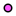

<!doctype html>
<html lang="en">
    <head>
        <meta charset="utf-8">
        <meta http-equiv="X-UA-Compatible" content="IE=edge">
        <meta name="viewport" content="initial-scale=1,user-scalable=no,maximum-scale=1,width=device-width">
        <meta name="mobile-web-app-capable" content="yes">
        <meta name="apple-mobile-web-app-capable" content="yes">
        <link rel="stylesheet" href="css/leaflet.css">
        <link rel="stylesheet" href="css/qgis2web.css"><link rel="stylesheet" href="css/fontawesome-all.min.css">
        <link rel="stylesheet" href="css/leaflet-search.css">
        <link rel="stylesheet" href="css/leaflet-control-geocoder.Geocoder.css">
        <link rel="stylesheet" href="css/leaflet-measure.css">
        <style>
        html, body, #map {
            width: 100%;
            height: 100%;
            padding: 0;
            margin: 0;
        }
        </style>
        <title></title>
    </head>
    <body>
        <div id="map">
        </div>
        <script src="js/qgis2web_expressions.js"></script>
        <script src="js/leaflet.js"></script>
        <script src="js/multi-style-layer.js"></script>
        <script src="js/leaflet-svg-shape-markers.min.js"></script>
        <script src="js/leaflet.rotatedMarker.js"></script>
        <script src="js/leaflet.pattern.js"></script>
        <script src="js/leaflet-hash.js"></script>
        <script src="js/Autolinker.min.js"></script>
        <script src="js/rbush.min.js"></script>
        <script src="js/labelgun.min.js"></script>
        <script src="js/labels.js"></script>
        <script src="js/leaflet.wms.js"></script>
        <script src="js/leaflet-control-geocoder.Geocoder.js"></script>
        <script src="js/leaflet-measure.js"></script>
        <script src="js/leaflet-search.js"></script>
        <script src="data/Kodumanal_Village_2.js"></script>
        <script src="data/Contour_Major_3.js"></script>
        <script src="data/Controur_Intermediate_4.js"></script>
        <script src="data/Contour_Minor_5.js"></script>
        <script src="data/Excavated_Area_6.js"></script>
        <script src="data/Graves_7.js"></script>
        <script src="data/Bench_Mark_8.js"></script>
        <script>
        var map = L.map('map', {
            zoomControl:true, maxZoom:28, minZoom:1
        })
        var hash = new L.Hash(map);
        map.attributionControl.setPrefix('<a href="https://github.com/tomchadwin/qgis2web" target="_blank">qgis2web</a> &middot; <a href="https://leafletjs.com" title="A JS library for interactive maps">Leaflet</a> &middot; <a href="https://qgis.org">QGIS</a>');
        var measureControl = new L.Control.Measure({
            position: 'topleft',
            primaryLengthUnit: 'meters',
            secondaryLengthUnit: 'kilometers',
            primaryAreaUnit: 'sqmeters',
            secondaryAreaUnit: 'hectares'
        });
        measureControl.addTo(map);
        document.getElementsByClassName('leaflet-control-measure-toggle')[0]
        .innerHTML = '';
        document.getElementsByClassName('leaflet-control-measure-toggle')[0]
        .className += ' fas fa-ruler';
        var bounds_group = new L.featureGroup([]);
        function setBounds() {
            if (bounds_group.getLayers().length) {
                map.fitBounds(bounds_group.getBounds());
            }
        }
        var layer_Google_0 = L.tileLayer('https://mt0.google.com/vt/lyrs=s&hl=en&x={x}&y={y}&z={z}', {
            opacity: 1.0,
            attribution: '',
            minZoom: 1,
            maxZoom: 28,
            minNativeZoom: 0,
            maxNativeZoom: 24
        });
        layer_Google_0;
        map.addLayer(layer_Google_0);
        var layer_Arc_Tile_1 = L.WMS.layer("http://e21d8ceb.ngrok.io/geoserver/kodumanal/wms?service=WMS&version=1.1.0", "Arc_Tile", {
             format: 'image/png',
             uppercase: true,
             transparent: true,
             continuousWorld : true,
             tiled: true,
             info_format: 'text/html',
             opacity: 1,
             maxZoom: 24,
             maxNativeZoom:24,
             identify: false,
        });
        map.addLayer(layer_Arc_Tile_1);
        function pop_Kodumanal_Village_2(feature, layer) {
            var popupContent = '<table>\
                    <tr>\
                        <th scope="row">SurveyNo</th>\
                        <td>' + (feature.properties['SurveyNo'] !== null ? Autolinker.link(feature.properties['SurveyNo'].toLocaleString()) : '') + '</td>\
                    </tr>\
                    <tr>\
                        <th scope="row">Village</th>\
                        <td>' + (feature.properties['Village'] !== null ? Autolinker.link(feature.properties['Village'].toLocaleString()) : '') + '</td>\
                    </tr>\
                    <tr>\
                        <th scope="row">Taluk</th>\
                        <td>' + (feature.properties['Taluk'] !== null ? Autolinker.link(feature.properties['Taluk'].toLocaleString()) : '') + '</td>\
                    </tr>\
                    <tr>\
                        <th scope="row">District</th>\
                        <td>' + (feature.properties['District'] !== null ? Autolinker.link(feature.properties['District'].toLocaleString()) : '') + '</td>\
                    </tr>\
                </table>';
            layer.bindPopup(popupContent, {maxHeight: 400});
        }

        function style_Kodumanal_Village_2_0() {
            return {
                pane: 'pane_Kodumanal_Village_2',
                opacity: 1,
                color: 'rgba(74,241,241,1.0)',
                dashArray: '',
                lineCap: 'butt',
                lineJoin: 'miter',
                weight: 2.0, 
                fillOpacity: 0,
                interactive: true,
            }
        }
        map.createPane('pane_Kodumanal_Village_2');
        map.getPane('pane_Kodumanal_Village_2').style.zIndex = 402;
        map.getPane('pane_Kodumanal_Village_2').style['mix-blend-mode'] = 'normal';
        var layer_Kodumanal_Village_2 = new L.geoJson(json_Kodumanal_Village_2, {
            attribution: '',
            interactive: true,
            dataVar: 'json_Kodumanal_Village_2',
            layerName: 'layer_Kodumanal_Village_2',
            pane: 'pane_Kodumanal_Village_2',
            onEachFeature: pop_Kodumanal_Village_2,
            style: style_Kodumanal_Village_2_0,
        });
        bounds_group.addLayer(layer_Kodumanal_Village_2);
        map.addLayer(layer_Kodumanal_Village_2);
        function pop_Contour_Major_3(feature, layer) {
            var popupContent = '<table>\
                    <tr>\
                        <th scope="row">LAYER</th>\
                        <td>' + (feature.properties['LAYER'] !== null ? Autolinker.link(feature.properties['LAYER'].toLocaleString()) : '') + '</td>\
                    </tr>\
                    <tr>\
                        <th scope="row">Length</th>\
                        <td>' + (feature.properties['Length'] !== null ? Autolinker.link(feature.properties['Length'].toLocaleString()) : '') + '</td>\
                    </tr>\
                    <tr>\
                        <th scope="row">Altitude</th>\
                        <td>' + (feature.properties['Altitude'] !== null ? Autolinker.link(feature.properties['Altitude'].toLocaleString()) : '') + '</td>\
                    </tr>\
                </table>';
            layer.bindPopup(popupContent, {maxHeight: 400});
        }

        function style_Contour_Major_3_0() {
            return {
                pane: 'pane_Contour_Major_3',
                opacity: 1,
                color: 'rgba(213,20,65,1.0)',
                dashArray: '',
                lineCap: 'square',
                lineJoin: 'bevel',
                weight: 2.0,
                fillOpacity: 0,
                interactive: true,
            }
        }
        map.createPane('pane_Contour_Major_3');
        map.getPane('pane_Contour_Major_3').style.zIndex = 403;
        map.getPane('pane_Contour_Major_3').style['mix-blend-mode'] = 'normal';
        var layer_Contour_Major_3 = new L.geoJson(json_Contour_Major_3, {
            attribution: '',
            interactive: true,
            dataVar: 'json_Contour_Major_3',
            layerName: 'layer_Contour_Major_3',
            pane: 'pane_Contour_Major_3',
            onEachFeature: pop_Contour_Major_3,
            style: style_Contour_Major_3_0,
        });
        bounds_group.addLayer(layer_Contour_Major_3);
        function pop_Controur_Intermediate_4(feature, layer) {
            var popupContent = '<table>\
                    <tr>\
                        <th scope="row">LAYER</th>\
                        <td>' + (feature.properties['LAYER'] !== null ? Autolinker.link(feature.properties['LAYER'].toLocaleString()) : '') + '</td>\
                    </tr>\
                    <tr>\
                        <th scope="row">Length</th>\
                        <td>' + (feature.properties['Length'] !== null ? Autolinker.link(feature.properties['Length'].toLocaleString()) : '') + '</td>\
                    </tr>\
                    <tr>\
                        <th scope="row">Altitude</th>\
                        <td>' + (feature.properties['Altitude'] !== null ? Autolinker.link(feature.properties['Altitude'].toLocaleString()) : '') + '</td>\
                    </tr>\
                </table>';
            layer.bindPopup(popupContent, {maxHeight: 400});
        }

        function style_Controur_Intermediate_4_0() {
            return {
                pane: 'pane_Controur_Intermediate_4',
                opacity: 1,
                color: 'rgba(105,59,255,1.0)',
                dashArray: '',
                lineCap: 'square',
                lineJoin: 'bevel',
                weight: 2.0,
                fillOpacity: 0,
                interactive: true,
            }
        }
        map.createPane('pane_Controur_Intermediate_4');
        map.getPane('pane_Controur_Intermediate_4').style.zIndex = 404;
        map.getPane('pane_Controur_Intermediate_4').style['mix-blend-mode'] = 'normal';
        var layer_Controur_Intermediate_4 = new L.geoJson(json_Controur_Intermediate_4, {
            attribution: '',
            interactive: true,
            dataVar: 'json_Controur_Intermediate_4',
            layerName: 'layer_Controur_Intermediate_4',
            pane: 'pane_Controur_Intermediate_4',
            onEachFeature: pop_Controur_Intermediate_4,
            style: style_Controur_Intermediate_4_0,
        });
        bounds_group.addLayer(layer_Controur_Intermediate_4);
        function pop_Contour_Minor_5(feature, layer) {
            var popupContent = '<table>\
                    <tr>\
                        <th scope="row">LAYER</th>\
                        <td>' + (feature.properties['LAYER'] !== null ? Autolinker.link(feature.properties['LAYER'].toLocaleString()) : '') + '</td>\
                    </tr>\
                    <tr>\
                        <th scope="row">Length</th>\
                        <td>' + (feature.properties['Length'] !== null ? Autolinker.link(feature.properties['Length'].toLocaleString()) : '') + '</td>\
                    </tr>\
                    <tr>\
                        <th scope="row">Altitude</th>\
                        <td>' + (feature.properties['Altitude'] !== null ? Autolinker.link(feature.properties['Altitude'].toLocaleString()) : '') + '</td>\
                    </tr>\
                </table>';
            layer.bindPopup(popupContent, {maxHeight: 400});
        }

        function style_Contour_Minor_5_0() {
            return {
                pane: 'pane_Contour_Minor_5',
                opacity: 1,
                color: 'rgba(255,255,255,1.0)',
                dashArray: '',
                lineCap: 'square',
                lineJoin: 'bevel',
                weight: 1.0,
                fillOpacity: 0,
                interactive: true,
            }
        }
        map.createPane('pane_Contour_Minor_5');
        map.getPane('pane_Contour_Minor_5').style.zIndex = 405;
        map.getPane('pane_Contour_Minor_5').style['mix-blend-mode'] = 'normal';
        var layer_Contour_Minor_5 = new L.geoJson(json_Contour_Minor_5, {
            attribution: '',
            interactive: true,
            dataVar: 'json_Contour_Minor_5',
            layerName: 'layer_Contour_Minor_5',
            pane: 'pane_Contour_Minor_5',
            onEachFeature: pop_Contour_Minor_5,
            style: style_Contour_Minor_5_0,
        });
        bounds_group.addLayer(layer_Contour_Minor_5);
        function pop_Excavated_Area_6(feature, layer) {
            var popupContent = '<table>\
                    <tr>\
                        <td colspan="2">' + (feature.properties['Name'] !== null ? Autolinker.link(feature.properties['Name'].toLocaleString()) : '') + '</td>\
                    </tr>\
                </table>';
            layer.bindPopup(popupContent, {maxHeight: 400});
        }

        var pattern_Excavated_Area_6_0 = new L.StripePattern({
            weight: 0.3,
            spaceWeight: 2.0,
            color: '#ffffff',
            opacity: 1.0,
            spaceOpacity: 0,
            angle: 315
        });
        pattern_Excavated_Area_6_0.addTo(map);
        function style_Excavated_Area_6_0() {
            return {
                pane: 'pane_Excavated_Area_6',
                stroke: false,
                fillOpacity: 1,
                fillPattern: pattern_Excavated_Area_6_0,
                interactive: true,
            }
        }
        function style_Excavated_Area_6_1() {
            return {
                pane: 'pane_Excavated_Area_6',
                opacity: 1,
                color: 'rgba(247,249,72,1.0)',
                dashArray: '',
                lineCap: 'square',
                lineJoin: 'bevel',
                weight: 6.0,
                fillOpacity: 0,
                interactive: true,
            }
        }
        map.createPane('pane_Excavated_Area_6');
        map.getPane('pane_Excavated_Area_6').style.zIndex = 406;
        map.getPane('pane_Excavated_Area_6').style['mix-blend-mode'] = 'normal';
        var layer_Excavated_Area_6 = new L.geoJson.multiStyle(json_Excavated_Area_6, {
            attribution: '',
            interactive: true,
            dataVar: 'json_Excavated_Area_6',
            layerName: 'layer_Excavated_Area_6',
            pane: 'pane_Excavated_Area_6',
            onEachFeature: pop_Excavated_Area_6,
            styles: [style_Excavated_Area_6_0,style_Excavated_Area_6_1,]
        });
        bounds_group.addLayer(layer_Excavated_Area_6);
        map.addLayer(layer_Excavated_Area_6);
        function pop_Graves_7(feature, layer) {
            var popupContent = '<table>\
                    <tr>\
                        <td colspan="2">' + (feature.properties['NAME'] !== null ? Autolinker.link(feature.properties['NAME'].toLocaleString()) : '') + '</td>\
                    </tr>\
                </table>';
            layer.bindPopup(popupContent, {maxHeight: 400});
        }

        function style_Graves_7_0() {
            return {
                pane: 'pane_Graves_7',
                radius: 4.0,
                opacity: 1,
                color: 'rgba(0,0,0,1.0)',
                dashArray: '',
                lineCap: 'butt',
                lineJoin: 'miter',
                weight: 2.0,
                fill: true,
                fillOpacity: 1,
                fillColor: 'rgba(253,91,255,1.0)',
                interactive: true,
            }
        }
        map.createPane('pane_Graves_7');
        map.getPane('pane_Graves_7').style.zIndex = 407;
        map.getPane('pane_Graves_7').style['mix-blend-mode'] = 'normal';
        var layer_Graves_7 = new L.geoJson(json_Graves_7, {
            attribution: '',
            interactive: true,
            dataVar: 'json_Graves_7',
            layerName: 'layer_Graves_7',
            pane: 'pane_Graves_7',
            onEachFeature: pop_Graves_7,
            pointToLayer: function (feature, latlng) {
                var context = {
                    feature: feature,
                    variables: {}
                };
                return L.circleMarker(latlng, style_Graves_7_0(feature));
            },
        });
        bounds_group.addLayer(layer_Graves_7);
        map.addLayer(layer_Graves_7);
        function pop_Bench_Mark_8(feature, layer) {
            var popupContent = '<table>\
                    <tr>\
                        <td colspan="2">' + (feature.properties['NAME'] !== null ? Autolinker.link(feature.properties['NAME'].toLocaleString()) : '') + '</td>\
                    </tr>\
                </table>';
            layer.bindPopup(popupContent, {maxHeight: 400});
        }

        function style_Bench_Mark_8_0() {
            return {
                pane: 'pane_Bench_Mark_8',
                shape: 'triangle',
                radius: 6.0,
                opacity: 1,
                color: 'rgba(255,255,255,1.0)',
                dashArray: '',
                lineCap: 'butt',
                lineJoin: 'miter',
                weight: 2.0,
                fill: true,
                fillOpacity: 1,
                fillColor: 'rgba(218,21,51,1.0)',
                interactive: true,
            }
        }
        map.createPane('pane_Bench_Mark_8');
        map.getPane('pane_Bench_Mark_8').style.zIndex = 408;
        map.getPane('pane_Bench_Mark_8').style['mix-blend-mode'] = 'normal';
        var layer_Bench_Mark_8 = new L.geoJson(json_Bench_Mark_8, {
            attribution: '',
            interactive: true,
            dataVar: 'json_Bench_Mark_8',
            layerName: 'layer_Bench_Mark_8',
            pane: 'pane_Bench_Mark_8',
            onEachFeature: pop_Bench_Mark_8,
            pointToLayer: function (feature, latlng) {
                var context = {
                    feature: feature,
                    variables: {}
                };
                return L.shapeMarker(latlng, style_Bench_Mark_8_0(feature));
            },
        });
        bounds_group.addLayer(layer_Bench_Mark_8);
        map.addLayer(layer_Bench_Mark_8);
        var osmGeocoder = new L.Control.Geocoder({
            collapsed: true,
            position: 'topleft',
            text: 'Search',
            title: 'Testing'
        }).addTo(map);
        document.getElementsByClassName('leaflet-control-geocoder-icon')[0]
        .className += ' fa fa-search';
        document.getElementsByClassName('leaflet-control-geocoder-icon')[0]
        .title += 'Search for a place';
        var baseMaps = {};
        L.control.layers(baseMaps,{' Bench_Mark': layer_Bench_Mark_8,' Graves': layer_Graves_7,' Excavated_Area': layer_Excavated_Area_6,' Contour_Minor': layer_Contour_Minor_5,' Controur_Intermediate': layer_Controur_Intermediate_4,' Contour_Major': layer_Contour_Major_3,' Kodumanal_Village': layer_Kodumanal_Village_2,"Arc_Tile": layer_Arc_Tile_1,"Google": layer_Google_0,},{collapsed:false}).addTo(map);
        setBounds();
        var i = 0;
        layer_Kodumanal_Village_2.eachLayer(function(layer) {
            var context = {
                feature: layer.feature,
                variables: {}
            };
            layer.bindTooltip((layer.feature.properties['SurveyNo'] !== null?String('<div style="color: #ffffff; font-size: 10pt; font-family: \'MS Shell Dlg 2\', sans-serif;">' + layer.feature.properties['SurveyNo']) + '</div>':''), {permanent: true, offset: [-0, -16], className: 'css_Kodumanal_Village_2'});
            labels.push(layer);
            totalMarkers += 1;
              layer.added = true;
              addLabel(layer, i);
              i++;
        });
        map.addControl(new L.Control.Search({
            layer: layer_Kodumanal_Village_2,
            initial: false,
            hideMarkerOnCollapse: true,
            propertyName: 'SurveyNo'}));
        document.getElementsByClassName('search-button')[0].className +=
         ' fa fa-binoculars';
        resetLabels([layer_Kodumanal_Village_2]);
        map.on("zoomend", function(){
            resetLabels([layer_Kodumanal_Village_2]);
        });
        map.on("layeradd", function(){
            resetLabels([layer_Kodumanal_Village_2]);
        });
        map.on("layerremove", function(){
            resetLabels([layer_Kodumanal_Village_2]);
        });
        </script>
    </body>
</html>
